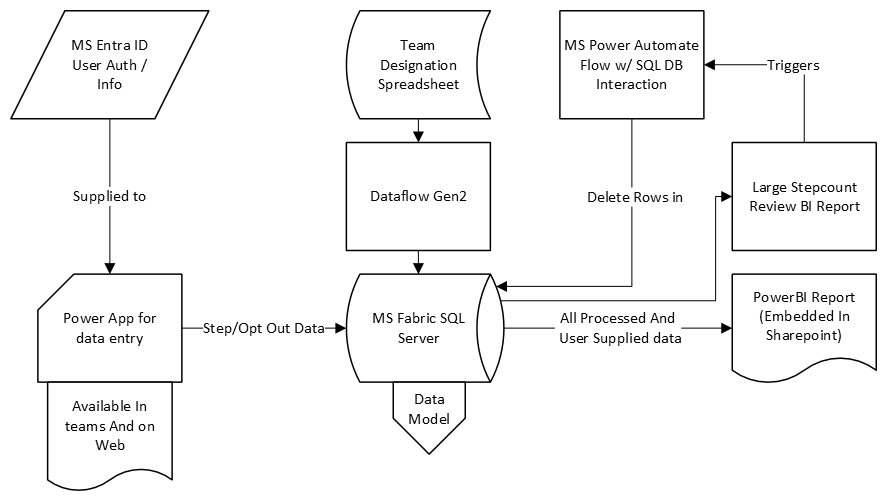

5 May 2025 • Calgary, AB
A few days ago, Plains kicked off the Pacesetter Step Challenge, a Canada-wide initiative designed to build community, support employee wellbeing, and foster a bit of friendly competition. My job was building the data infrastructure that powers the entire program.
We just started the challenge and already have more than 200 employees tracking their daily step counts, competing as teams, and staying motivated through clear, real-time feedback. To make this happen, I developed a comprehensive yet streamlined data solution, blending modern Microsoft tools to handle both the user experience and backend analytics.
Key Tech Used
- Power Apps: Provided a simple, intuitive way for employees to log steps right inside Teams or via the web.
- MS Entra ID (formerly Azure AD): The app doesn't require login or anything—you just open it and it already knows who you are!
- Microsoft Fabric SQL Server: Centralized all step data, team affiliations, and user preferences into a scalable, efficient database.
- Power Automate: Automated routine database maintenance tasks to keep data clean and ready for reporting.
- Power BI: Delivered real-time interactive dashboards embedded directly into SharePoint, offering immediate visibility into personal and team performance.

How I Built It
I began by creating a Power App designed specifically for easy data entry. Participants simply log their daily steps—no complicated forms or extra steps involved. By connecting this app to MS Entra ID, logging in became seamless.
The data entered flows directly into a Microsoft Fabric SQL Server instance, which is scalable and performant compared to the Excel-based solution used last year.
On the analytics side, I developed a data model optimized for performance and easy integration with reporting tools. Using Power BI, my teammate Nevin Sangha and I created dashboards that provide live insights into team standings and individual achievements, embedded right in SharePoint.
To maintain data integrity, I employed Power Automate to automate cleanup tasks and trigger routine data processes, eliminating the need for manual intervention.
Lessons Learned
- User experience matters: Making the app as straightforward as possible makes it obvious what the user should do, and also improves performance.
- Fast data = more engagement: People love checking in with the live dashboard and seeing friends’ and teammates’ numbers.
- Automate whenever possible: Anticipating and automating routine tasks, particularly in SQL, early on saved significant time.
You might be wondering if using Power Apps was worth the headache instead of rolling your own solution in Flask or raw HTML/CSS/JS. The integration with Entra ID and the Teams embedding made it absolutely worthwhile, especially at scale.
TL;DR: Built the data backbone for Plains’ company-wide step challenge using Power Apps, MS Fabric SQL, Power Automate, and Power BI, resulting in a scalable and user-friendly solution.
#data #powerapps #powerbi #automation #msfabric